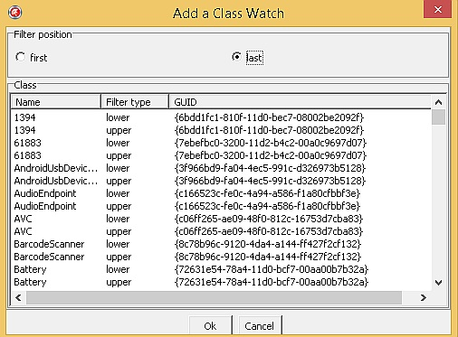
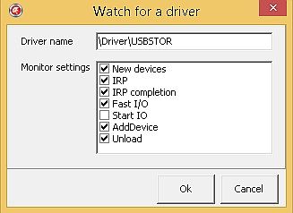

IRPMon allows the user to monitor PnP drivers that are not present in the kernel at the moment (e.g. because there are no devices for them to control). To automatically monitor such a driver, the user has to know its name and devices of which device setup class the driver serves. IRPMon then installs itself as a filter driver for that class to be notified when a new device belonging to the class is connected to the system, which usually means that the driver of interest is being loaded.
To watch for new devices of a certain device setup class, the user needs to select the Watch class... item from the Action menu. Then a form is displayed, allowing to specify the target class and a position for the IRPMon driver within its filters (Figure 1). The driver may be installed only once for each filter type (upper or lower) for a given class. The filter position determines which devices and drivers IRPMon would be able to detect and possibly monitor their activity. Effects of individual filter positions and types are summarized in Table 1.

Figure 1: The Add a Class Watch window
Table 1: Effects of certain filter positions and types
| Filter type | Position | Bus driver (PDO) | Lower filters | Function driver (FDO) | Upper filters |
|---|---|---|---|---|---|
| Lower | Fist | Yes | No | No | No |
| Lower | Last | Yes | Yes | No | No |
| Upper | First | Yes | Yes | Yes | No |
| Upper | Last | Yes | Yes | Yes | Yes |
As the table suggest, the higher the filter position is, the more PnP drivers involved in servicing the new devices are detected. The IRPMon driver actually does not write itself into the LowerFilters or UpperFilters registry values. Rather, it installs a registry filter that emulates contents of these values, so the system thinks, the driver is present there. This scheme introduces two advantages:
The fact that such a wonderful mechanism works only on Windows Vista and above is just a small price for its benefits.
The list of class watches appears in the File under the Watched classes item. Each watch is represented by a single menu item which serves as remover of the watch.
Class watches themselves do not automatically start monitoring of detected drivers and devices. They just causes the appropriate DriverDetected and DeviceDetected messages being sent from the IRPMon driver, but nothing more. It automatically start monitoring a driver (and its devices) that is loaded when a new device of a watched class appears, a driver name watch needs to be specified. If the IRPMon driver detects presence of a new driver (as a result of a class watch) with name matching a driver name watch, this driver is automatically hooked and its monitoring begins.

Figure 2: The Watch for a Driver window
To add a driver name watch, the user needs to select the Watch Driver... item from the Action menu. A new dialog is displayed (Figure 2) that allows the user to specify the driver name in question (such as \Driver\USBSTOR) and monitoring settings for drivers matching the watch. Similarly to class watches, installed driver name matches appears under the Watched drivers submenu of the File menu and can be removed there. Removing a driver name watch, however, does not stop monitoring of drivers that it discovered. The user has to stop their monitoring the same way as in case of drivers she manually selected for monitoring.
A newly added driver name watch has effect only for drivers and devices appearing after its creation. IRPMon does not search the device tree for drivers that are already present and their name matches the watch. Also, the current implementation of driver name watches does not support wildcards or regular expressions, and is case insensitive.